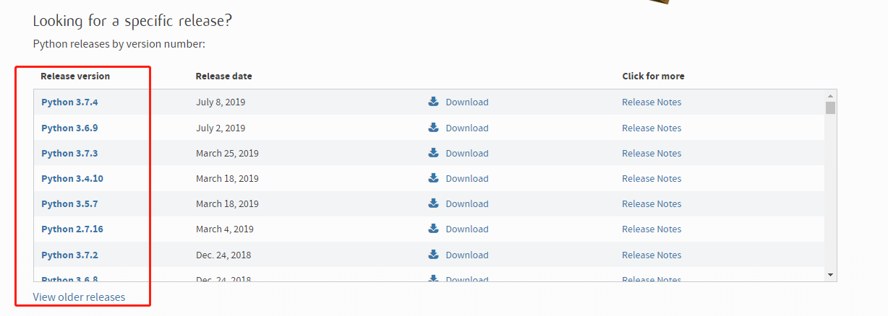

原文出处:本文由博客园博主徐海建提供。
原文连接:https://www.cnblogs.com/adam012019/p/11339027.html
原文连接:https://www.cnblogs.com/adam012019/p/11339027.html
之前从没接触过编程之类的东西，在网上下载个自己需要的软件真实比较麻烦，找了半天总是没有合适的，好不容易找到了，不过那家公司已经倒闭了，软件不更新也运行不了了，于是乎，求人不如求己，自己没事编程吧。
在网上了解了几个编程语言，C语言应该是最好的，不过难道有点大，目前比较火的是Python，对比了一下，我还是选择比较容易上手的Python！
下载Python
Python 官网：https://www.python.org/
目前最新版本为 Python 3.7.4
之前各个版本也可以下载：

根据自己计算机型号下载，我用的是32位的，64位无法安装

下载后，双击安装包即可安装
按照完成后，就可以进行编程啦！
测试
我们来测试下：
按 Win+R 键，输入 cmd 调出命令提示符，输入 python ，就可以知道安装的版本等信息，
并且在显示 >>> 后可以直接进行编程，比如“hello，world!”
当然，也支持打印中文“你好，世界！”
软件已经安装好，就先学到这里吧……